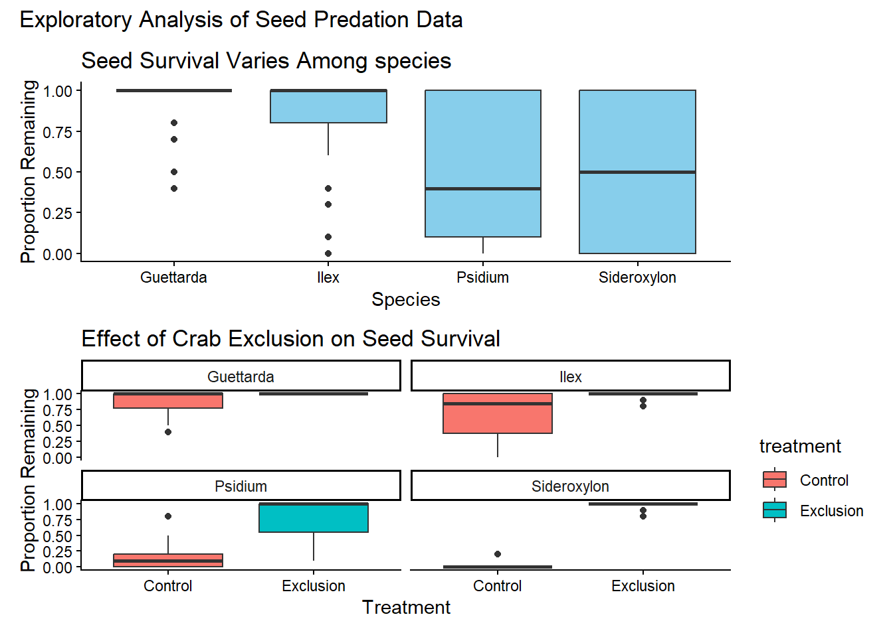
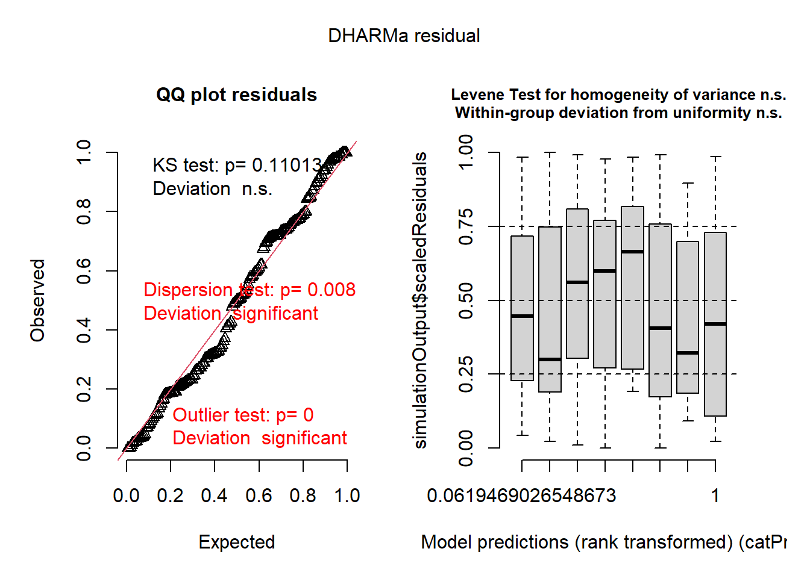
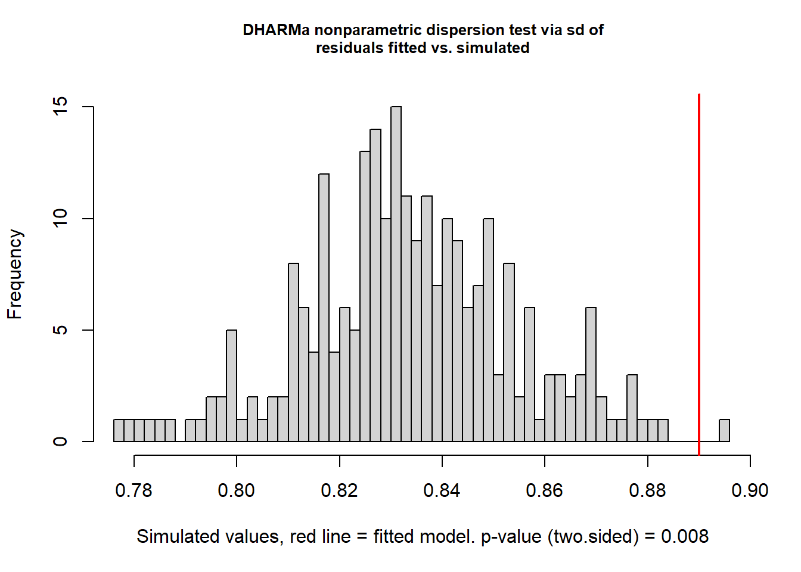
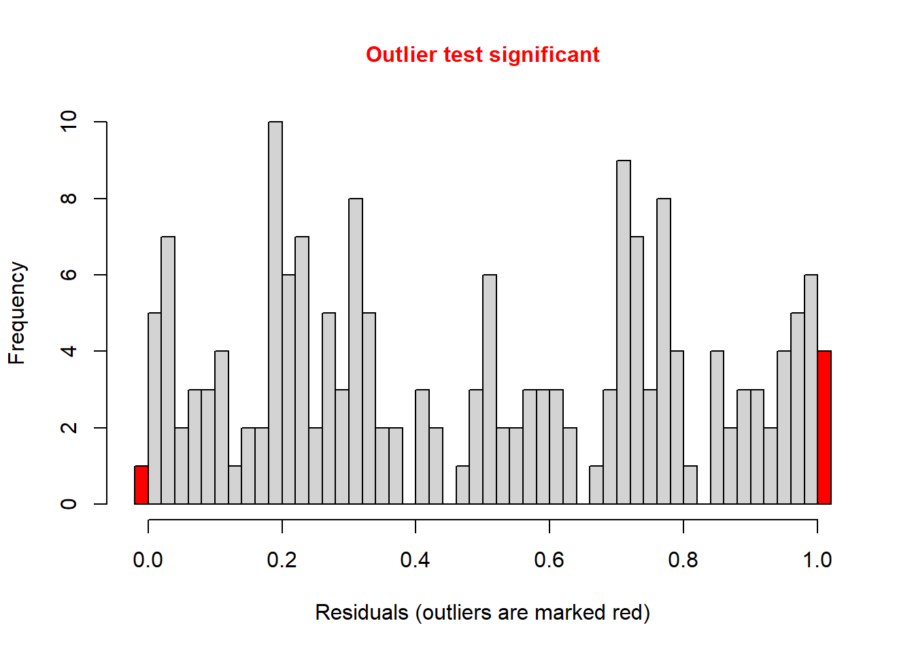
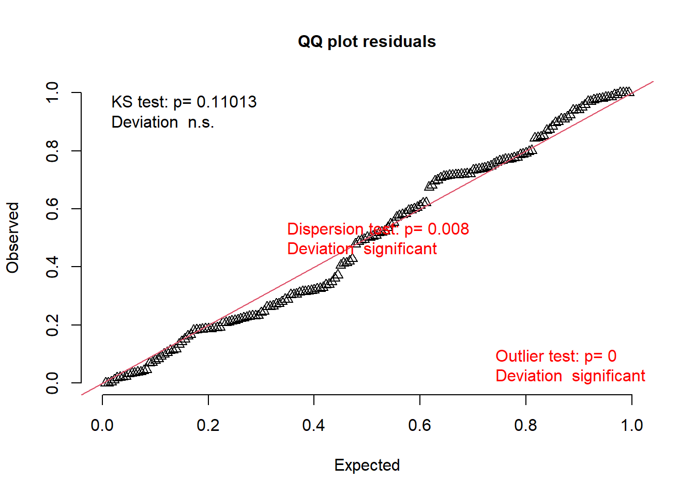
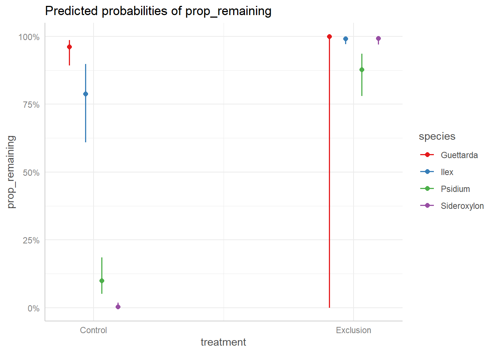
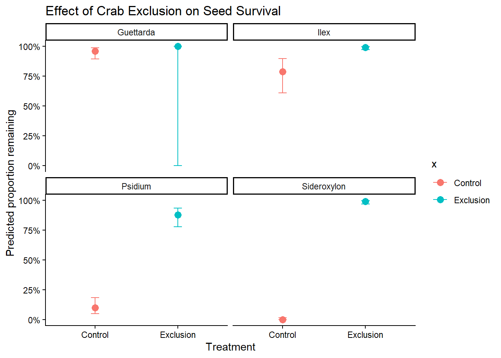

The goal of this assignment is to apply the tools and approaches we’ve learned during this course to critique, and then expand on, a statistical analysis.
Please submit this assignment via GitHub by 2 November.
Read & reflect
Read the article “Do native land crabs hinder forest regeneration on Socorro Island?” (Luna-Zuniga et al. 2025). Describe: [2 pt]
The primary question(s) the authors are trying to answer. The primary question was whether native crabs Johngarthia oceanica are the main hindrance to 5 species regeneration or tree recruitment through seedlings predations on Socorro Island. The authors found that crabs crabs were a recruitment barrier for 2 for P. socorrense and S. Socorrense and the other problem was attributed to low germination rate.
The experimental and sampling design.
The studey was conducted 18 paired experimental plots on Socorro Island. Four tree species were tested: 6 for illex, 4 Guettarda and sideroxylon and 8 for psidium. They also employed controlled experiment to account for crab predation for control and crab exclusion area and tested the effects. Geographic coordinates (latitude and longitude) were recorded for each site, allowing potential assessment of spatial structure in the data. The response was proportion of seeds remaining after 10 days and 10 seeds were administred in each paired plot.
The statistical approach used.
Imagine you are reviewing this manuscript prior to its publication. Provide a constructive critique of the statistical analyses as they relate to the experimental and sampling design. What did they do well? What would be improved? [3 pt]
To evaluate the predation, The authors used general linear mixed model where they fitted and binomial and negative binomial1. In the binomial model, the response was the proportion of seedlings remaining after 10 days where treatment and species as the fixed effect and treatment * Species as the interactions terms and ID of the plot as the random effects. In the second model where they analyse forest regeneration, the authors fitted nbinomia1 for number of species perplot as the response variable and life stage, species, forest type as fixed effects predictors while species * life stage were considered as interactive effects while plot id was the random effects
However, the use of binomial and nbinomial1 was justified. The authors reported adjusted residual plot but I don’t see any diagnostic plots. Dispersion, temporalautocorrelation, spatialautocorrelation, zeroflation test were noted tested too.
Re-analysis
The data associated with this paper are available here: https://figshare.com/articles/dataset/Luna-Zuniga_etal_Regeneration_Socorro-Island_xlsx/29144249/1?file=54804050. Note that the file has several header lines; remove these in Excel prior to importing the data into R or use readxl.
Based on your critique of the statistical approach taken by Luna-Zuniga et al. (2025), re-analyze the data to evaluate the effect of Johngarthia oceanica on the structure and composition of these island forests, specifically focusing on the seed predation experiment. The authors mentioned the usage of DHARMa for diagnostic plot but i could tell exactly for what.
Use the code chunk below to load packages and the data. [0.5 pt]
library(tidyverse)library(glmmTMB)library(janitor)library(performance)library(DHARMa)library(patchwork)# Paste your code in here!crabs <-read_csv("C:/Users/ajallow/Documents/ARA2026/msci669_hw1_jallow/hw3/Reanalysedata.csv")crabs <- crabs |> janitor::clean_names()crabs <- crabs |>mutate( species =factor(species), site =factor(site), id_treatment =factor(id_treatment), treatment =factor(treatment))str(crabs)
# Paste your code in here!# Dataset for modellingcrabs <- crabs |>mutate( prop_remaining = remaining / total_seeds)dat_1 <- crabs |>select( species, treatment,id_treatment,remaining,removed, prop_remaining, total_seeds)dat_sum <- dat_1 |>group_by (species, treatment) |>summarise(n =n(),.groups ="drop" )dat_mod <- crabs |>select(species, site,id_treatment,treatment, total_seeds, removed, remaining,prop_remaining, latitude, longitude,altitude ) |>mutate(species =factor(species),site =factor(site), id_treatment =factor(id_treatment),treatment =factor(treatment))p1 <-ggplot(dat_mod, aes(x = species, y = prop_remaining)) +geom_boxplot(fill ="skyblue") +theme_classic() +labs( x ="Species", y ="Proportion Remaining", title ="Seed Survival Varies Among species")p2 <-ggplot(dat_mod, aes(x = treatment, y = prop_remaining,fill = treatment)) +geom_boxplot() +facet_wrap(~ species) +theme_classic() +labs(x ="Treatment",y ="Proportion Remaining",title ="Effect of Crab Exclusion on Seed Survival")(p1 / p2 ) +plot_annotation(title ="Exploratory Analysis of Seed Predation Data")

Model development
Based on the experimental and sampling design, which variables should be considered as fixed effects? Which could be considered as random effects? What distributions should be considered? [1 pt]
The fixed variables are treatment, species *treatment interactive effects while the random variable is id_treatment to determine whether the effect of crab exclusion on seed survival differed among species. Using proportion of seeds remaining after predation used Bionomial as a probability of remaining.
Analysis
Develop a set of generalized linear mixed-effects models that reflect the structures described above. Include a model that includes the same response variables as Luna-Zuniga et al. (2025). [1 pt]
# Paste your code in here!crabs <- crabs |>mutate( prop_remaining = remaining / total_seeds) # recreating their model datam0 <-glmmTMB(prop_remaining ~ treatment * species + (1| id_treatment),weights = total_seeds, family = binomial, data = dat_mod)summary(m0)
Evaluate the models using an approach covered as part of this class. [0.5 pt] Five candidate generalized linear mixed-effects models were evaluated using Akaike’s Information Criterion (AIC). I have fitted 4 Alternative models compared to the model used in the paper my the model in the paper which include treatment remains the best base on the AIC. Model with omitted interaction or replaced interactions with treatment produces poorer AICs
# Paste your code in here!AIC(m0, m1,m2,m3,m4) |>arrange(AIC)
Check your model diagnostics (i.e., are the model assumptions met) using an approach covered as part of this class. [1 pt] Since the data collection was not orderely by month or year so i could check for TemporalAutocorrelation. I tested for spatial autocorrelation using the residual for longitude and latitude coordinates. No significant residual spatial autocorrelation was detected. I tested for the outliers and shows there were extreme outliers which could be due complete survival or complete seedling loss.
# Paste your code in here!library(DHARMa)res0 <-simulateResiduals(m0)plot(res0)

testDispersion(res0)

DHARMa nonparametric dispersion test via sd of residuals fitted vs.
simulated
data: simulationOutput
dispersion = 1.0676, p-value = 0.008
alternative hypothesis: two.sided
testOutliers(res0)

DHARMa bootstrapped outlier test
data: res0
outliers at both margin(s) = 5, observations = 179, p-value < 2.2e-16
alternative hypothesis: two.sided
percent confidence interval:
0.000000000 0.005586592
sample estimates:
outlier frequency (expected: 0.00167597765363128 )
0.02793296
testUniformity(res0)

Asymptotic one-sample Kolmogorov-Smirnov test
data: simulationOutput$scaledResiduals
D = 0.089989, p-value = 0.1101
alternative hypothesis: two-sided
DHARMa Moran's I test for distance-based autocorrelation
data: res0_spatial
observed = 0.073794, expected = -0.071429, sd = 0.097227, p-value =
0.1353
alternative hypothesis: Distance-based autocorrelation
#There is no significant evidence of residual spatial autocorrelation after accounting for treatment, species, and treatment identity in the GLMM
Which model would you choose as your final model? Why is that model preferred over the others? [1 pt] My m0 model remains the best model among the 5 explored models. m0 Model have the lowest AIC comparatively to the rest of the models.The check model function aslo gave a perfect diagnostic plots for posterior predictive check, distribution quantile and normality of random effect plots while Standardization collinearity binned residual plots were not perfect better than the other models.
Generate model predictions (using the ggeffects package) and plot the predictions over observed data. Describe your results. [1.5 pt] The predicted probabilities after exposure to predation for control and exclusion varies to species to species response. Undercontrol condition, Guettarda shows very high seed survival(0.96) while illex exhibited good suvivaal(0.76) but Psidium(0.10) and sideroxylon(0.00) shows very low survival indication very strong predation under the control plots. In the exclusion plot, predicted survival increaded for all species where 0.99 for illex and sideroxlon , 0.88 for psidium anbd 1.00 for Guettarda. This prediction shows that the crab predation affected stongly psidium and sideroxylon. Some oif the CI was not consistent across all species. The CI for Guettarda under control was very wide (0.00-1.00)
# Paste your code in here!library(ggeffects)pred <-ggpredict(m0, terms =c("treatment", "species"))pred
# Predicted probabilities of prop_remaining
species: Guettarda
treatment | Predicted | 95% CI
----------------------------------
Control | 0.96 | 0.89, 0.99
Exclusion | 1.00 | 0.00, 1.00
species: Ilex
treatment | Predicted | 95% CI
----------------------------------
Control | 0.79 | 0.61, 0.90
Exclusion | 0.99 | 0.97, 1.00
species: Psidium
treatment | Predicted | 95% CI
----------------------------------
Control | 0.10 | 0.05, 0.19
Exclusion | 0.88 | 0.78, 0.94
species: Sideroxylon
treatment | Predicted | 95% CI
----------------------------------
Control | 0.00 | 0.00, 0.02
Exclusion | 0.99 | 0.97, 1.00
Adjusted for:
* id_treatment = NA (population-level)
plot(pred)

pred_df <-as.data.frame(pred)library(ggplot2)ggplot(pred_df, aes(x = x, y = predicted, color = x)) +geom_point(size =3) +geom_errorbar( aes(ymin = conf.low, ymax = conf.high),width =0.1) +facet_wrap(~group) +scale_y_continuous(labels = scales::percent_format()) +labs(x ="Treatment", y ="Predicted proportion remaining",title ="Effect of Crab Exclusion on Seed Survival") +theme_classic()

Conclusions
How do your results compare to those presented by Luna-Zuniga et al. (2025)? [1 pt] I tried 4 alternative models where I omitted the interactive term (treatment * Species), replaced or using treatment alone or species alone as the main effects but the AIC were poorer than the AIC of the model in the paper. My results wer general consistent with the authors Luna-Zúñiga et al. (2025). I reproduced the authors model using binomial distribution for the propotion of seeds remaing after predation using species, treatment and there interaction effecs and ID treatment as random effects. Other 4 models were tried with removing the interactions effecs, replacing the interaction effects which resulted in poorer AICs. I did also attempt the spatialautocorrection which was found to be non significant. Overall, the Authors’s model was better in AIC than my attempted models. Therefore, the authors claims that that the effect of crab exclusion differ significantly among species was correct.
Provide summary statements about the quality of your analysis, including any potential limitations or caveats. [1 pt]
AI statement
If you used AI for this assignment, please describe your use, including:
I use AI to trouble shoot by coding errors
1. What tool or service did you use? I use copilot
2. What was the specific purpose or use? I use it to trouble shoot my coding errors and making the final figure more beautiful
3. How did this use enhance your understanding of the topic/code? I find it always a good help with coding or improving my sentences for better grammar